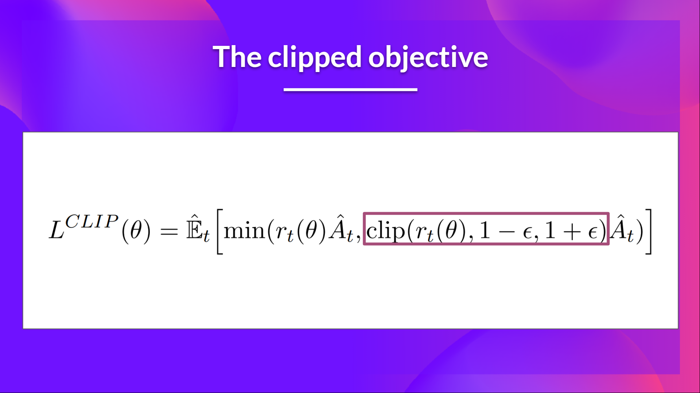
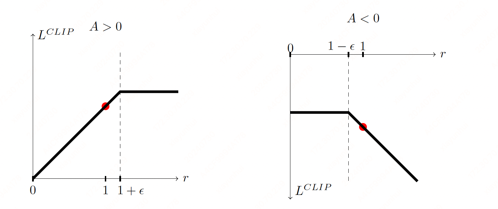

Proximal Policy Optimization#
Note
PPO is motivated by the same question as TRPO: how can we take the biggest possible improvement step on a policy using the data we currently have, without stepping so far that we accidentally cause performance collapse?
Where TRPO tries to solve this problem with a complex second-order method, PPO is a family of first-order methods that use a few other tricks to keep new policies close to old. PPO methods are significantly simpler to implement, and empirically seem to perform at least as well as TRPO.
From on-policy to off-policy#
Review expression for the policy gradient:
where \(\pi_{\theta}\) is a stochastic policy and \(A_{\theta}\) is the advantage function.
Tip
On-policy: The agent learned and the agent interacting with the environment is the same. In policy gradient, we use \(\pi_{\theta}\) to collect data, when \(\theta\) is updated, we have to sample training data again.
Off policy: The agent learned and the agent interacting with the environment is different. Our goal is to use the sample from \(\pi_{\theta'}\) to train \(\theta\), \(\theta'\) is fixed, so we can re use the sample data.
Using importance sampling:
Let \(\theta'=\theta_{\text{old}}\), the off policy objective can be expressed as:

The clipped objective#
The ratio function:
As we can see, \(r_{t}(\theta)\) denotes the probability ratio between the current and old policy:
If \(r_{t}(\theta) > 1\), the action \(a_{t}\) and state \(s_{t}\) is more likely in the current policy than the old policy.
If \(r_{t}(\theta) < 1\), the action is less likely for the current policy than for the old one.
So this probability ratio is an easy way to estimate the divergence between old and current policy.
Without a constraint, maximization of \(L^{CPI}\) would lead to an excessively large policy update; hence, we now consider how to modify the objective, to penalize changes to the policy that move \(r_{t}(\theta)\) away from 1. The main objective we propose is the following:

where \(\epsilon\) is a hyperparameter, say, \(\epsilon=0.2\).

If \(A>0\), the objective will increase if the action becomes more likely—that is, if \(\pi_{\theta}(a|s)\) increases. Once \(\pi_{\theta}(a|s) > (1+\epsilon) \pi_{\theta_{\text{old}}}(a|s)\), the min kicks in and this term hits a ceiling of \((1+\epsilon)A\). Thus: the new policy does not benefit by going far away from the old policy.
If \(A<0\), the objective will increase if the action becomes less likely—that is, if \(\pi_{\theta}(a|s)\) decreases. Once \(\pi_{\theta}(a|s) < (1-\epsilon) \pi_{\theta_{\text{old}}}(a|s)\), the max kicks in and this term hits a ceiling of \((1-\epsilon)A\). Thus, again: the new policy does not benefit by going far away from the old policy.
PPO-Clip#
PPO-clip updates policies via
typically taking multiple steps of (usually minibatch) SGD to maximize the objective. Here \(L\) is given by
in which \(\epsilon\) is a (small) hyperparameter which roughly says how far away the new policy is allowed to go from the old.
What we have seen so far is that clipping serves as a regularizer by removing incentives for the policy to change dramatically, and the hyperparameter \(\epsilon\) corresponds to how far away the new policy can go from the old while still profiting the objective.
Algorithm 2 (PPO-Clip)
Initial policy paramter \(\theta_{0}\).
Initial value function parameter \(\phi_{0}\).
for k \(= 0,1,2,...\) do
\(\quad\)Collect set of trajectories \(\mathcal{D}_{k}=\{\tau_{i}\}\) by running policy \(\pi_{k}=\pi(\theta_{k})\) in the enviroment.
\(\quad\)Compute rewards-to-go \(\hat{R}_{t}\).
\(\quad\)Compute advantage estimates \(\hat{A}_{t}\) based on the current value function \(V_{\phi_{k}}\).
\(\quad\)Update the policy by maximizing the PPO-Clip objective:
\(\quad\)where
\(\quad\)Fit value function by regression on mean-square error:
end for